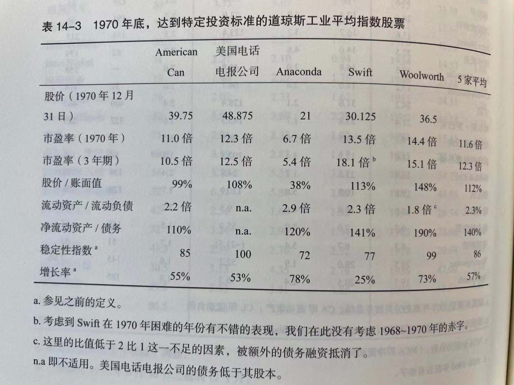
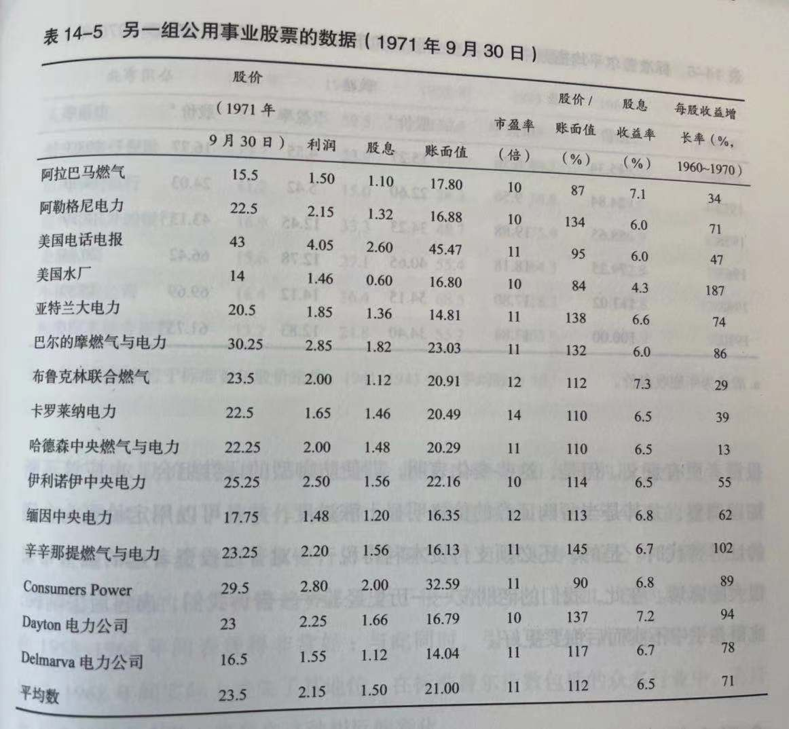

巴菲特会如何解读《聪明的投资者》
——解读巴菲特序言
第一，做些傻事
——防御型做分散投资，定期定额投指数基金
ix 格雷厄姆把投资者基本上分成两大类型——"防御型"和"进攻型"。"防御型"（或者说消极型）投资者的第一大目标是避免重大错误和重大亏损，他最主要的精力当然都放在防守上；第二个目标是轻松自由，不需要经常分析决策，省心省力，省时省事。
显然大多数业余投资者，更适合做防御型投资者。格雷厄姆建议防御型投资者要遵循四大原则：适当分散投资10到30只股票；选股要选大型企业、杰出企业、融资保守的企业；股息持续发放20年以上；市盈率不超过25倍。
. 巴菲特从不推荐买入任何股票，过去20年却10次推荐指数基金："对于绝大多数投资者来说，成本费率低的指数基金就是股票投资的最佳选择。我的导师格雷厄姆在很多年前就坚持这样的立场，而伺候我经历了一切进一步证实了这一看法的真实可靠性。"
. 巴菲特（1993）说："通过定期投资指数基金，一个什么都不懂的投资人通常都能打败大部分专业经理人，很奇怪的是，当傻钱了解到自己的极限之后，它就不再傻了。"
x 即使你什么也不懂，在投资上像个傻子，不懂宏观经济，不懂行业，不会分析公司基本面，不会选股，也不会择时，只需要定期定额投资一只全市场指数基金（如美国的标准普尔500和中国的沪深300指数基金），什么都不用管，就相当于那些非常专业的基金经理的平均业绩水平，因为这些基金经理管理资金占市场的大头，其平均业绩水平就是市场平均业绩水平。
第二，做些趣事
——进攻性做价值投资，强调安全边际
. 格雷厄姆这样定义："进攻型（或者说积极型、进取型）投资者的最核心特征是，愿意花费大量时间和精力，选择比一般证券更加稳健可靠而且潜在回报更有吸引力的证券。"
. 然后格雷厄姆根据自己超过50年的证券投资经验，加上自己做的很多研究，向进攻型投资者推荐以下三种投资策略：第一种策略是购买相对不受市场追捧的大公司股票；第二种策略是买进被严重低估的便宜货股票；第三种策略是特殊情况或"破产债务重组"股票套利。
xi 格雷厄姆本人是买便宜货股票为主，特殊情况逃离为辅。巴菲特早期完全模仿格雷厄姆，但是后来他发现，非常低估的便宜货股票后来变得很少很少，于是转向第一种策略，购买相对不受市场追捧的大公司股票。
巴菲特后来总结自己的选股之道是寻找超级明星股："我们始终在寻找那些业务清晰易懂、业绩持续优异、由能力非凡并且为股东着想的管理层来经营大公司。这种目标并不能充分保证我们投资盈利——我们不仅要在合理的价格上买入，而且我们买入的公司未来业绩还要与我们的估计相符。寻找超级明星股的投资之道，给我们提供了走向真正成功的惟一机会。"
"我们的投资仍然是集中于很少的几只股票，而且在概念上非常简单——真正伟大的投资理念常常用简单的一句话就能概括。我们寻找的是一个具有持续竞争优势并且由一群能干又全心全意为股东服务的人来管理的企业。当发现具备了这些特征的企业，而且我们又能以合理的价格购买时，我们几乎不可能出错。"
xii "我坚信股票市场中存在着许多无效现象。格雷厄姆与多德部落的投资人之所以成功就在于他们利用市场无效性产生的价格与价值之间的差异。在华尔街上股价会受到羊群效应的影响，当最情绪化、最贪婪的或最沮丧的人决定股价的高低时，所谓市场价格是理性的说法很难令人信服。事实上，市场价格经常是荒谬的。……如果你以6毛钱买进1元钱的纸币，其风险大于以4毛钱买进1元钱的纸币，可是后者的预期报酬却更高。基于价值构造的投资组合风险更小，预期报酬却搞。"
其实价值投资就是逆向投资，在股市过于低估时买入，而在股市过于高估、安全边际太小甚至消失时卖出。这正符合格雷厄姆所说的，做些与众不同有新意的趣事。
第三，做些好事
——帮助别人，成就自己，利人利己
xii 能不能克服人性的从众心理，隔绝市场巨大的情绪影响力，保持理性，这是最大的挑战。
. 要让市场服务你而不是指导你。你会发现，对你有用的是市场先生的钱包，而不是市场先生的智慧。如果某一天他表现出沉静在一种特别愚蠢的情绪中，你完全可以自由地选择你的反应模式，你可以完全忽视他的报价，不买也不卖，也可以乘机大占他的便宜，高价卖出或低价买入。但是，如果你收到他的影响追随他的一举一动，结果会是灾难性的，让你损失惨重。
xiii 相反，一个投资者必须既具备良好的企业分析判断能力，又具备一种能把自己的思想行为和那些市场上盘旋而且极易传染的情绪隔绝开来的能力，只有企业分析能力和情绪控制能力同时具备，才能取得投资成功。
. 市场可能会在一段时间短期忽略企业的成功，但是最终一定会用股价上涨来确认企业的成功。正如格雷厄姆所说：'市场短期是一台投票机；但长期是一台称重机'
. 小时候成功靠小聪明足矣，但大成功必须靠天时、地利、人和。
xiv 一句话概括，想要投资成功，一要智商，二要情商。智商不是从你，而是正确的思考框架；情商不是战胜别人，而是战胜自己。 让我们再次重读巴菲特的序言："要一生投资成功，并不需要有天才般的超高智商，也不需要神人般的非凡商业洞察力，更不需要独有你知的内幕消息。 要一生投资成功，只需要两个因素——有一个正确合理的思考框架让你能够做出正确的投资决策；有一种能力让你控制住自己的情绪以避免情绪破坏这个思考框架。 "
第4版序
——沃伦·巴菲特
xviii 几年前，即将在80岁之际，格雷厄姆向一位朋友表达了他的想法：希望每天都做一些"傻事、有创造性的事和慷慨的事"。
他的第一个奇怪目标反应了这样一个事实：他善于使自己的想法不带有任何说教或傲慢成分。尽管他的想法是强有力的，但是，它们的表达方式无疑是温和的。
本杰明·格雷厄姆生平简介
——贾森·兹威格
xxii * 市场就像是一只摆钟，永远在短命的乐观（它使得股票过于昂贵）和不合理的悲观（它使得股票过于廉价）之间摆动。聪明的投资者则是现实主义者，他们向乐观主义者卖出股票，并从悲观主义者手中买进股票。
- 投资成功的秘诀在于你的内心。如果你在思考问题时持批判态度，不相信华尔街所谓"事实"，并且以持久的信心进行投资，你就会获得稳定的收益，即便在熊市亦如此。通过培养自己的约束力和勇气，你就不会让他人的情绪波动来左右你的投资目标。说到底，你的投资方式远不如你的行为方式重要。
第1章 投资与投机：聪明投资者的预期收益
投资与投机
9 早在1934年我们撰写的那部《证券分析》教科书中，就试图准确地定义两者之间的差别："投资操作是以深入分析为基础，确保本金的安全，并获得适当的回报；不满足这些要求的操作就是投机。"
11 大多数时期，投资者必须认识到，所持有的普通股经常会包含一些投机成分。自己的的任务则是将投机成分控制在较小的范围，并在财务和心理上面做好对短期和长期不利后果的准备。
. 在很多时候，投机并非明智之举，尤其是在系列情况下：（1）自以为在投资，实则投机；（2）在缺乏足够的知识和技能的情况下，把投机当成一种严肃的事情，而不是当成一种消遣；（3）投机投入的资金过多，超出了自己承担亏损的能力。
防御型投资者的预期投资成果
1. 6年前的探讨 12 我们曾建议投资者将其资金分配于高等级债券和蓝筹股上；其中，债券所占的比例不低于25%，且不高于75%，而股票的比例则与之相适应。最简单的选择则是，两者各占一半，并根据市场情况的变化进行小幅（比如5%左右）调整。另一种策略是，当"感觉市场已处于危险的高位时"，将股票持有比例减少到25%；并在他"感到股价的下跌已使其吸引力与日俱增时"，将持股量提升到最大限度，即75%的比例。
2. 1964年以后的实际情况 14 这只不过是过去的经验带给我们的无数例证之一，它再次证明，未来的证券价格是根本无法预测的。债券的波动幅度几乎总会大大低于股票，而且一般来说，投资者购买任何期限的优质债券，都不用担心其市场价值的变化。
3. 1971年年底和1972年年初的预期和投资策略 17 首先，他可以买入一只地位稳固的投资基金股份，以代替自己亲自构建股票组合的做法。他也可以利用许多州的信托公司或银行经营的"共同信托基金（common trust funds）"或"混合基金"（commingled funds）。
. 第三种做法是采取"美元成本平均法"，即每月或每季度投入同等数额的美元资产来购买股票。采用这种做法，投资者可以在市场低迷时买到比市场高位时更多的股票；而且，他还有可能为自己所持股份最终获得满意的总体价格。严格地说，这是所谓的"程式投资"（formula investing）这种更一般方法的应用。我们建议投资者将其资金投资于股票的比例限制在25%-75%之间，并根据股市的动向进行方向操作。这种策略正式"程式投资"原理的体现。
激进型投资者的预期投资结果
19 基于长期前景选择股票的投资者，也会面临同样的障碍。其预测完全错误的可能性（我们已在前文做空的航空业例子作过说明），无疑会比那些只根据短期业绩行事的投资者更大。
20 关于这种绝佳机会今年已不再存在的第三个也是最后一个例证，来自我们自己在华尔街的证券投资：其中相当一部分投资集中于购买廉价证券（bargain issues），这些证券的特征是，起售价低于净流动资产（营运资本）本身的价值（不包括厂房等其他资产，弹药扣除求偿权优先于该股票的所有债务）。显然，这种证券的卖价远远低于其作为一家非上市企业的价值。任何私人业主或大股东，都不会在如此荒谬的低价位出售其拥有的股份。奇怪的是，这种股票并不难找。
第2章 投资者与通货膨胀
22 我们的读者必须具有足够的智慧认识到，即使是优质股票，也不可能 在任何条件下 都优于占全。我们 不能认为，无论股市已经涨到多高，股息收益比债券利率低多少，股票都是比债券更好的投资。 相反的论断（任何债券都比股票安全，就像我们几年前经常听到的那样），同样是错误的。
24 我们认为，此时，投资者可以设想未来若干年通货膨胀率 可能 在（比如）3% 左右（这一点很难肯定），并据此进行思考和决策。
25 我们是否具有充分的理由相信，未来年份普通股的表现要大大超过过去的55年？
我们对这一关键问题的回答是 否定 的。普通的股票表现 也许 会比以前更好，但这种结果是高度不确定的。在此，我们必须考虑两个与投资结构有关的时间因素。首先，从长期的角度（比如今后25年）来看，未来会发生什么情况；其次，从短期或中期（比如5年或更短的时间）来看，投资者的财务和心理状况会发生什么变。他的想法，他的希望和担心，他对以前结果的满意与否，尤其是他的下一步打算，所有这一切都不是通过思考以往的投资来决定的，而是通过年复一年的经历来决定的。
关于这一点，我们的态度是明确的。从时间上看，通货膨胀（或通货紧缩）状况与普通股的利润和价格之间并不存在密切联系。
通货膨胀与公司利润
27 按照以往经济周期的情况来看， 企业好年景与通货膨胀是同时出现的，而坏年景则与价格下跌如影随形。
. 但数据显示，通货膨胀对股本（资本权益） 盈利能力 的影响并不大；事实上，它甚至不能维持投资原先的利润率。陷入，这里一定有某些因素妨碍了美国公司整体实际利润率的增长。或许，最重要的因素是：（1）工作的增长超过了生产率的增长；（2）对巨额新增资本的需要压低了销售额与投入资本的比例。
28 其次，这意味着，乳沟投资者将其资金全部集中于股票，他很可能被股市亢奋的上涨或惨痛的下跌所左右而误入歧途。特别是当他认为通货膨胀会进一步深化时，这种情况出现的可能性更大。因为此时，如果新一轮牛市降临，他不会把大幅上涨看成是终将下跌的危险信号以及赚取丰厚利润的机会；而反过来认为，这是对通货膨胀假说的证明，并且因此而不断地购买普通股票，既不管市场水平有多高，也不管股息回报有多低。这种做法必将带来懊悔。
35 为了对过去100年的股票经济得出全面的认识，除了股价走势之外，还必须了解相应的利润和股息情况。
. 下面是我们对这些数据的分析：所有10年期的数据使各年的波动趋于平滑，并构成了一幅持续上涨的总体画面。
第4章 防御型投资者的投资组合策略
债券与股票配置的基本问题 45 作为一项基本的指导原则，我们建议这种投资者投资于股票的资金，绝不能少于其资金总额的25%，且不得高于75%；与此相应，其债券投资的比例则应在75%和25%之间。这里的含义是，两种主要投资手段之间的标准分配比例，应该是各占一半。根据传统，增加普通股票比重的合理理由是，持续的熊市导致了"廉价交易价格"的出现。反之，当投资者认为市场价格已经上升到危险高度时，则应将股票投资的比例减至50%以下。
. 要一个 普通 的股票投资者在市场超过某一点位减仓，或在市场持续下跌后增仓，这似乎并不是一个切实可行的策略。正是由于普通投资者的相反操作（他们似乎必须这样去做），才使过去出现了大幅上涨和下跌；而且（作者认为）未来还会发生类似的涨跌。
46 但我们仍然认为，对半开的资金分配法则，对防御型投资者仍然具有实质性的意义。它非常简单；其操作方向无疑是正确的；它使其遵循者感到，自己至少是在对市场变化作出某种反应；最重要的是，它可以避免投资者在市场日益走高直至危险的程度时，仍不断加大自己的股票投资。
此外，真正的保守型投资者，将会对自己的一半资金在牛市中的收益感到知足；而在深陷熊市时，比照那些冒险型投资者的处境，他们也会从自己相对较好的境况中获得安慰。
证券的类型 55 人们总是乐于接受安全性较差的优先股，而拒绝安全性更优的收益债券，这充分地说明，华尔街总是存在着一些传统的做法和习俗，而无视在新的条件下需要新的观点。随着每一次新的乐观和悲观情绪的潮起潮落，我们会忘记历史并抛弃一些久经考验的原则，但是，却往往会顽固地坚持自己的偏见，并对其深信不疑。
第5章 防御型投资者与普通股
普通股的投资规则 57
- 适当但不要过分分散化，你的持股数应限制在最少10只，最多30只不同的股票之间。
- 你挑选的每一家公司应该是大型的、知名的，在财务上是稳健的。这些形容词必然会有一定的含糊性，但其基本意义是十分清楚的。关于这一问题的进一步讨论见本章的结尾部分。
- 每一家公司都应具有长期连续支付股息的历史。（在1971年，道琼斯指数的成分股均满足这一条件）。具体来说，我们建议连续支付股息的历史，至少应该从1950年开始。
- 投资者应该将其买入股票的价格限制在一定的市盈率范围，其参照的美股收益，应取过去7年的平均数。 我们认为，针对这一平均数，其市盈率应控制在25倍以内；如果是过去12个月的利润，则应控制在20倍以内。 但这一限制会把所有最强势且最受欢迎的股票，排除在我们的投资组合之外。实际上，这将把几乎所有的"成长股"都排除在外，而这些股票正是过去若干年来股市的最爱，无论是投机者还是投资者均对其趋之若鹜。为此，我们必须对这种彻底的排除给出理由。
成长股与防御型投资者 58 所谓"成长股"，是指那些在过去每股收益增长显著超过所有股票的平均水平，并且预计未来仍将如此持续下去的股票。
. 显然，这样的股票是值得购买和拥有的，只要其价格不是太高。当然，也存在着问题，因为相对当期利润而言，成长股的价格一直都很高；相对于过去的某一时期的利润而言，其市盈率更高。因此，在成长股投资方面带来很大的投机成分，从而使得此种投资的操作很难成功。
59 当然，股票选对了，买入的价格适当，并且在巨大的上涨之后、可能的下跌出现之前将其卖出，则会出现奇迹。但对于一般投资者而言，这种事情是可遇不可求的。与此相比，我们认为，那些不那么热门，因此利润乘数较为合理的大型公司，反而是一种对大多数投资者更为合适的选择，尽管它们看上去不那么光彩夺目。在关于投资组合选择的章节中，我们将进一步阐述这一观点。
投资组合的改变 59 我们的防御型投资者也应当寻求这种改进投资组合的建议——至少每一年一次——就像其初次投资时会寻求建议一样。由于他缺乏关于哪些顾问可以信赖的专业知识，因此只能找那些声望最高的机构，否则，他很可能会遭到一些"二把刀"的糊弄。最重要的是，他必须向其提请咨询的每一个顾问，申明自己要坚持本章开头提出的几项选股原则。需要说明的是，如果一开始选定的股票组合很恰当，就没有必要对其进行频繁或大规模的改变了。
美元成本平均法 . 纽约股票交易所在推广"月度购买计划"方面，已付出了相当大的努力。这种计划要求，投资者每个月投入同样数额的资金买进一只或多只股票。它是所谓的美元成本平均法（定期定额投资法）这种"程式化投资法"的一种特例。
60 汤姆森林小姐以如下惊人之语，结束了对这种极其简单的投资法的讨论："无论证券价格出现怎样的波动，这种投资法都能使人满怀信心地取得最终的成功；迄今为止，尚无任何可与美元平均法相媲美的投资法问世。"
. 如此购买股票，虽然每月投入的金额不大，但20年下来或者更长，其总量会相当可观，对投资者的意义也相当重大。
投资者的个人情况 61 实际上，医务人员在处理证券事务方面的无能是众所周知的。其原因在于，他们通常对自己的智力极具信心，且获利之心迫切，而没有认识到，投资的成功需要付出大量的精力和对证券价值做出专业判断。
62 在投资方面，他们希望自己能做到既聪明又有进取性，虽然其收益对他们来说远不如工资重要。这种态度大有好处。对于一个年轻的投资者来说，及早开始自己的投资教育和实践是很有利的。如果他以进取型投资者的方式进行操作，肯定会犯一些错误，并遭受某种程度的损失。年轻可以承受这些失败，并从中获益。我们奉劝那些初学者：不要把自己的精力和金钱浪费在试图战胜市场上。他们应当对证券的价值加以研究，并以尽可能小额的资金，对自己在价格和价值方面的判断进行常识性检验。
关于"风险"的说明 63 在第8章，我们将明确提出自己的观点：就真正的投资者而言，单是市场价格的下跌，并不会导致他的亏损；因此，市场可能出现下跌这一事实，并不意味着他面临着实际的亏损风险。如果以合理的投资年限来衡量，一组精心挑选的股票投资组合，能为我们提供满意的整体回报，那么，这一组合实际上就是"安全"的。
第6章 积极型投资者的证券组合策略：被动的方法
65 对积极型投资者最有用的总结是，指出他们不应该去做哪些事。他们通常不会购买高等级的优先股，宁愿将其让给公司购买者；他们也会回避那些等级较低的债券和优先股，除非其价格有相当大的折扣——以高息证券为例，其价格至少比票面价值低30%，即使其收益率看起来相当不错。他们还会小心对待各种新发行的证券，其中包括很有吸引力的可转换债券和优先股，以及近期利润状况很好的普通股。
新发行证券的总体情况 70 从安全性的角度依次审视，即按照从最高信用等级的债券、二级债券、再到普通股的次序来看，这种效应会变得越来越突出。
71 它们之所以看起来大体上是安全的，是因为人们假定，公司目前的优良业绩可以一直延续到未来，期间不会出现大的滑坡。承销这些债券的投资银行会把这种假定视作理所应当，其推销人员也会轻易地说服自己及客户相信这种假设。然而，这种投资方法是不可靠的，有可能使投资者付出代价。
牛市期间，大批的非上市公司通常会乘机上市；这在1945~1946年间曾发生过，在1960年又再度重演。随后，这一过程使新发行的股票过多，到达市场无法承受的地步，最终导致了1962年5月的灾难性结局。经过几年的"忍耐"期，这样的悲喜剧在1967~1969年间，又一幕接一幕地再次上演。
第7章 积极型投资者的证券组合策略：主动的方法
一般的市场策略——不同时期的方法 76 发生的波动尽管达到了较大程度，但是要想从这种交易中获利，必须拥有特殊的才能或"感觉"。这完全不符合我们对读者智力所作出的假设，因此，在我们推荐的方法中，必须排除基于此类技巧的业务。
成长股投资 77 成长股的定义是：不仅过去的业绩超过了平均水平，而且预计将来也会如此。因此，聪明的投资者重点选择成长股，似乎是惟一符合逻辑的做法。实际上，正如我们将要看到的，这一问题较为复杂。
. 这种简单的想法面临两种意料不到的复杂情况。首先，业绩记录很好而且看上去很有前途的普通股，其价格也相应很高。投资者即使对其前景的判断是正确的，也仍然有可能得到不好的结果。原因就在于，预期收益以及完全包含在他所支付的股价中了（或许，他支付的股价还超出了预期收益）；其次，他对未来的判断有可能是错误的。不到一般情况下，公司的快速增长不可能永久持续下去。当一家公司一家获得了非常显著的扩张时，仅仅因为其规模扩大，就是它很难再取得以往的成就。到达某一时点，增长曲线就会平缓下来，而且许多情况下会转为下降。
78 从我们以前的研究中，可以看到类似的结果。这就说明，与一般的普通股投资相比，对成长型股票公司的分散化投资并不能带来优异的回报。
. 在这种投资领域，极好的未来前景已经完全被市场发现了，而且已经通过当期的市盈率（比如，20倍以上的市盈率）得到了反映。（我们建议，防御型投资者股票购买价的上限为过去7年平均利润的25倍。这两个标准在大多数情况下都是一样的。）
成长股这一类股票的一个显著特点，就是其市场价格的波动幅度一般较大。对于历史悠久的大公司（比如通用电气和IBM等）而言，情况是这样的；对于历史较短、规模较小的成功企业而言，情况更是如此。
. 公众对这种股票的热情越高，股价上涨的速度相对于其实际利润的增长就越快，同时，这种股票的风险也就越大。
79 但是，从一家公司的投资中获得巨额财富，几乎总是由下列人来实现的： 他们与特定公司有密切联系（通过雇佣关系和亲属关系等），从而使他们将自己大部分的自己以一种方式投进去，并且在各种情况下都始终持有这部分投资 ——尽管一直都有许多似乎能按高价出售的机会在引诱着他们。
推荐三个可用于"积极投资"的领域 80 为了在长时间内获得比一般投资更好的结果，一种选择或操作策略必须具备两项优势：（1）它必须能达到基本能稳健所要求的客观或合理标准；（2）它必须有别于大多数投资者或投机者采用的策略。根据经验和研究，我们推荐满足这些标准的三种投资方法。这些方法相互之间有很大的不同，而且每种方法都要求其分析者具有不通过知识和禀性。
不太受欢迎的大公司
如果我们认为，市场习惯于高估那些增长极快或在其他方面很出色的普通股，那么我们自然可以预计到，相对而言，市场至少会对那些因为发挥不令人满意而暂时失宠的公司做出低估 。这可以作为股市的一条基本规律，而且它向人们提供了一种既稳妥又有希望的投资方式。
在此，关键性的要求是，积极投资者要关注那些在一段时间内已不受欢迎的大公司。虽然小公司也会因为同样的原因被低估，而且许多情况下它们的利润和股价后来也会上涨，但是它们会导致这样的风险：始终没有盈利能力；尽管利润已经改善，但却长期被市场所忽视。 因此，与其他公司相比，大公司有两个优势。首先，他们可以借助资本和人力资源来渡过难关，并重新获得令人满意的利润。其次，市场有可能对公司表现出的任何改善做出较为迅速的反应。
82 但是在考虑每一个公司的情况时，可能需要对具有相反意义的特殊性因素进行分析。利润的极不稳定，必然导致某些公司的股票具有投机性。在形势不错的年份里，这些公司的股票价格较高，市盈率较低；而在形势较差的年份里，这些公司的股票价格较低，市盈率较高。
. 在这些情况下，市场对其异常的高利润的持久性十分怀疑，因此会做出保守的股价。当利润较低或不存在时，会出现相反的情况。（请注意，从数学上讲，如果某公司的利润"接近于0"，那么，其股票的市盈率一定会很高。）
83 或许，在选择证券组合时，积极型投资者应该这样去做：首先采用"低市盈率"的想法，然后再增加一些其他的定量和定性要求。
购买廉价证券
. 有两个标准可以用来寻找廉价普通股。首先是采用评估法。这主要是在对未来利润做出估计之后，再乘以与特定证券相适应的一个系数。如果得出的价值足以高出证券的市场价（而且假如投资者对所使用的方法有信心），那么他就可以将这种股票称为廉价股。第二项标准是私人所有者从企业中获得的价值。这种价值通常也主要由未来的预期利润决定——这种情况下得出的结果可能与第一个标准是一样的。但是在第二个标准中，更关注的可能是 资产 的可实现价值，尤其强调的是净流动资产或营运资本。
84 市场喜欢小题大做，使普通的波动夸大为严重的倒退。即使只是缺乏一点兴趣或热情，也会使价格降到荒谬的水平。
. 钢铁股曾经以其周期性波动而闻名，精明的买主可以在利润低下时购买这些股票，等到繁荣年份将其出售，以获得丰厚的收益。
. 遗憾的是，闻名可以说出许多这样的例子：利润和股价下降之后，两者并没有在随后自动出现大规模反弹。
. 这方面的许多经历表明，投资者要进行稳妥的投资，仅仅观察利润和股价的同时下跌是不够的。他还应该要求，过去10年或更长时间的利润至少具有较好的稳定性（没有利润赤字的年份）；同时，还要要求公司具备足够的规模和财务实力，以应对未来有可能出现的困难。因此，这里的理想状态是：一家著名大公司的股价，既大大低于其过去的平均价，有大大低于过去平均的市盈率。
. 我们已经指出过，长期被忽视或不受欢迎是导致股价偏低的另一个原因。
85 最容易识别的一类廉价证券是这样一种普通股：售价比公司（扣除所有优先债务后）的净运营资本本身还要低。这意味着，股票的买主根本没有支付固定资产（房屋和机器设备等）的价格，以及任何形式的商誉价格。
86 我们可以毫无保留地说，这是在发现和利用证券低估机会时的一种安全并有利可图的方法。可是，在1957年之后的整体市场上升时期，此类机会已非常罕见，而且许多可以利用的机会最终也只带来了少量的操作利润，有点甚至出现了亏损。
. 二类企业廉价证券的情况 我们所定义的二类企业，是指没有在重要行业中占据领导地位的企业。因此，这类企业通常都是自己业务领域的一些小企业，但是同样也包括非重点业务领域的一些主要企业。为了区别，任何已被称为成长股的企业，一般都不看作是"二类企业"。
87 当投资者拒绝二类企业的股票时，尽管这些股票的价格相对较低，但他们却认为或担心此类公司的前景不好。实际上，至少在下意识里，他们认为这些股票的 任何 价格水平都太高，因为它们是走向消亡的——正如1929年的类似理论，那时人们认为对"蓝筹股"而言，任何价格都不高，因为它们的未来前景是无限的。这两种观点都被夸大了，同时会带来严重的投资失误。事实上，与普通的非上市公司相比，规模中等的上市公司一般都称得上是大企业。我们没有正当理由认为：这类公司的业务将无法持续下去；并且在经历了经济特有的波动之后，这类公司的投资资本总体上不能获得较好的回报。
. 正如人们所预料的，这些被高估的证券随后在市场上会出现大幅下跌。有时候价格的摆动将造成明显的 被低估 。
一些"特殊"情况
89 就在几年以前，一些精明的投资者花大量的钱购买了破产铁路企业的债券。他们知道，铁路公司最终重组后，这些债券的价值会大大高于其购买成本。重组计划公布之后，出现了一个针对新发售证券的"发行前"市场。这些证券的售价必将大大高于购买旧证券的成本。尽管也存在计划未实现或被意外推迟的风险，但总体上讲，这种"套利业务"都是非常有利可图的。
我们的投资法素具有的广泛含义 90 作为一名投资者，你不可能成为较好的"半个经营者"，并因此而期望你的投资带来相当于正常业务一半的利润。
根据这一理论，大多数证券所有者都应该选择防御型投资者这一类别。他们没有时间、决断力和精力，来像经营企业那样从事投资活动。因此，他们应该满足于现在从防御型证券组合中获得的优越回报（甚至是较低的回报）；而且，他们还应该坚定地抵制不断出现的诱惑——为了增加回报，而偏离到其他道路上去的诱惑。
积极型投资者应该从事一些恰当的证券业务，即自己的知识和判断力足以应对这些业务；而且， 按已有的商业准则来看 ，这些业务有足够好的前景。
91 在向这类投资者提供和忠告时，我们都力求采用此类商业准则。在向防御型投资者提出建议和忠告时，我们要遵循（心理上和数学上的）三个要求：基本安全性，选择方法简单，以及有望获得满意的结果。 利用这些标准，我们可以在所建议的投资领域排除几类证券（这些证券通常被看作是适合各种不同投资者的）。
. 在大多数时间里，二类证券 的确 会围绕某一中心水平（它大大低于其公允价值）而波动。有时它们的价格会达到甚至超过公允价值，但这只会发生在牛市的上升阶段，此时，实际经验中获得的教训，将会与按市场价格购买普通股的理性观点相抵触。
第8章 投资者与市场波动
市场波动对投资决策的指导作用 95 他面临着两种可能获利的方法：择时 方法和 估价 方法。我们所说的择时，是指努力去预知股市的行为——认为未来走势会上升时。购买或持有股票；认为未来走势会下降时，出售或停止购买股票。
我们确信，无论采用哪一种估价方法，聪明的投资者都能得到满意的结果。我们同样确信，如果投资者以预测为基础强调择时交易，那么他最终将成为一个投机者，并要面对投机所带来的的财务结果。
. 我们相信，人们离华尔街越远，就会发现股市预测或择时的吹嘘越值得怀疑。
96 但是，我们不能认为，普通公众 可以通过市场预测来赚钱。
. 对投机者来说，择时具有一个很重要的心理作用，因为他想迅速获得收益。等到一年之后股票会上涨的这一想法，是不会被他接受的。然而，这一种等待期对投资者来说算不了什么。
贱买贵卖法 97 实际上，"聪明的投资者"的传统定义是，"那些在熊市（其他人都在卖出时）买入，在牛市（其他人都在买入时）卖出的人。"
98 几乎所有的牛市都明显具备一些共同点，比如：（1）价格水平达到历史最高；（2）市盈率很高；（3）与债券收益率相比，股息收益率较低；（4）大量的保证金投机交易；（5）有许多质量较差的新普通股的发行。
. 因此，即使在1949年，人们也 不能肯定地认为 ，投资者应该把自己的金融策略和方法主要建立在下列努力之上：在熊市最低价位买入，并且在牛市最高价位卖出。
最后的事实证明，情况正好相反。过去20年的市场行为并没有遵守以前的格局，没有服从曾经非常灵验的危险信号，也没有允许人们成功地利用贱买贵卖这一古老法则。
程式方案 99 这里的教训似乎是，股市上的任何赚钱方法，只要它容易理解并且被许多人采纳，那么，这种方法本身就会因太简单、太容易而无法持久。斯宾诺莎得出的下列结论既适合于哲学，也适合于华尔街；" 所有美好的东西，都既是罕见又复杂的。 "
投资者证券组合的市场波动 100 无论如何，投资者最好是事先接受所持大多数股票上涨的概率——比如，今后5年内不同时期价格的上升幅度，比最低点高出50%或更多；价格的下降幅度，比最高点等值的三分之一或更多——而不能仅仅只看到可能的情况。
. 到目前为止，最后一个问题的答案显然是 否定的 ，但是，即使是聪明的投资者，也可能需要很强的意志力来防止自己的从众行为。
企业价值与股市价值 101 在如今的投资领域，这是一个最重要的因素，而且它没有得到应有的关注。整个股市报价系统中包含了一个内在矛盾。公司过去的记录和未来前景越好，其股价与账面值之间联系越小。但是，超出账面值的溢价越大，决定公司内在价值的基础就越不稳定——这种"价值"就更加取决于股市的情绪和容量的变化。这样，我们最终面临一个悖论：公司做的越成功，其股价的波动可能会越大。 这实际上意味着，从根本上讲，普通股的质量越好。其 投机 的可能性越大——至少与不太引人注目的中等级别的证券相比是这样。（我们在此是把增长最快的企业与大多数地位稳固的企业相比较。这里的分析并没有包含高度投机的股票——因为这些企业本身具有投机性。）
102 从上面的套路中，我们可以得出一个对稳健的普通股投资者具有实用价值的结论。如果投资者特别关注自己的股票组合的选择，那么他最好集中购买售价能较好地接近于公司有形资产价值的股票——比如，高于有形资产价值的部分不超过三分之一。
. 这里有一点需要注意。股票的稳健投资并不仅仅在于购买价接近于其资产价值。除此之外，投资者还必须要求：合理的市盈率，足够强有力的财务地位，以及今后几年内的利润至少不会下降。
103 与高价（相对于收益和有形资产价值而言）购买股票的人相比，以这种账面价值为基础而建立股票组合的投资者，可以以更加独立和超然的态度来看待股市的波动。只要所持股票的盈利能力令人满意，他就可以尽可能不去关注股市的变幻莫测。此外，他有时还可以利用这种变幻莫测，来展现自己贱买贵卖的高超技巧。
结局和思考
105 首先，股市会经常出现严重的错误，而且敏锐和大胆的投资者有时可以利用其明显存在的错误。其次，大多数企业的特点和经营质量都会随着时间的变化而变化，有时会变得更好，但更多的情况下是变得更差。投资者不必一直紧盯着公司的业绩，只需要时不时地对其进行仔细的观察。
. 因此，如果投资者自己因为所持证券市场价格不合理下跌而盲目跟风或过度担忧的话，那么他就是不当地把自己的基本优势转变成了基本劣势。对这种人而言，他的股票没有市场报价可能会更好一些，因为这样的话，他就不会因为 其他人的 错误判断而遭受精神折磨了。
107 当他给出的价格高的离谱时，你才会乐意卖给他；同样，当他给出的价格很低时，你才乐意从他手中购买。但是，在其余的时间里，你最好根据企业整个业务经营和财务报告来思考所持股权的价值。
总结 . 投资者和投机者之间最现实的区别，在于他们对待股市变化的态度。投机者的主要兴趣在于预测市场波动，并从中获利；投资者的主要兴趣在于按合适的价格购买并持有合适的证券。实际上，市场波动对投资者之所以重要，是因为市场出现低价时，投资者会理智地做出购买决策；市场出现高价时，投资者必然会停止购买，而且还有可能做出抛售的决策。
. 总体上讲，投资者较好的办法是，只要有钱投资于股票，就不要推迟购买—— 除非 整体市场水平太高，而不符合长期以来所使用的价值标准。精明的投资者可以在各种证券当中，寻找到产生廉价交易的机会。
. 与看中价格波动和轻视价值基础的所有其他行为一样，经常在这一领域施展本领的一些聪明人所做的工作，会随着时间的推移而自动失效和自动失败。
另外一点思考
109 好的管理层会带来好的市场平均价格，差的管理层会带来不好的市场平均价格。
债券价格的波动 110 这带给我们的教训是：在华尔街，人们不能指望任何重要的东西会完全像以前那样再次发生。这正好反映了我们最喜爱的格言" 物极 必反"中的前两个字。
第9章 投资基金
"业绩"基金 118 首先，在这一方面，几乎所有取得优异成绩的人，都是一些三四十岁的年轻人。他们直接的金融经历，仅限于1948~1968年持续的牛市期。其次，他们时长把"好的投资"定义为购买如下股票：随后几个月内，该股票的市场价格有可能大幅上升。这导致大量的资金流入到较新的企业，而这些企业的股价与其资产或利润记录完全不相称。他们的行为，只有通过下列事实来"证明是合理的"：一方面，是天真地希望这些企业未来会取得成绩；另一方面，是想巧妙地利用公众信息不灵通和贪婪时产生的投机热情。
119 我们描述这方面的内容，是为了指出一个教训——一句法国的谚语或许最能表达这一点： 万变不离其宗 。自古以来，乐观和充满活力的人（通常都很年轻）都在承诺以"他人的钱"来创造奇迹。他们一般都能够暂时做到这一点（或者说，至少看起来是做到了这一点），但是，他们最终将给公众带来损失。
122 投资基金的经理在寻求更好的业绩时，会涉及一些特殊风险。迄今为止，所有的金融经历都表明，管理稳妥的大基金几年之内至多能获得稍微高于平均水平的业绩。如果不对它们加以稳妥管理，就会产生这样的情况：暂时获得惊人的虚幻利润，随后必然遭遇灾难性的损失。有些基金的业绩，曾经在10年或者更长的时间里持续超出平均市场水平。但是，这些基金都是一些非常特殊的例子：大多数业务集中于专门的领域，对资本的利用进行了自我限制。而且，并不向大众大量出售。
第10章 投资者与投资顾问
金融服务公司 129 通过自身的经历，我们发现普遍存在某一种态度，我们认为，这种态度会对原本可以更有用的咨询工作造成伤害。这就是它们普遍持有的观点：如果认为企业近期的因为活动处于有利条件，就应该购买该企业的股票；如果认为不利，就应该出售该企业的股票， 无论当期的股票价格如何 。这种肤浅的原则，经常会妨碍专业人士提供有意义的分析业务，即根据当期价格和所反映的长期盈利能力，来判断某种股票是否被高估或被低估了。
聪明的投资者不会完全依赖金融服务公司提供的建议来从事买卖交易。一旦确立了这种观点，那么金融服务公司的作用就是提供信息和建议。
经纪公司的建议 130 所以，不想受到投机性思维影响的政权购买者，在与自己的经纪人打交道时，一般都要做到细心和态度明确；必须清楚地（以言语和行动）告诉对方，自己对任何类似于股市"秘密消息"的事情都不感兴趣。一旦客户经纪人完全明白手中的客户是一个真正的投资者，那么他将会尊重客户的意见并与其合作。
131 在此，我们要表达一个强有力的结论：证券分析师对投资者的价值，主要取决于投资者自身的态度。如果投资者向分析师提出正确的问题，他就有可能得到正确（至少是具有一定价值的）答案。
第11章 普通投资者证券分析的一般方法
139 在从事所有这些业务时，证券分析师都要利用一些技巧，从基本技巧到最复杂的技巧。他有可能要大力调整公司年度报告中的数据，尽管这些数据得到了注册会计师郑重其事的 认可 ，他尤其要关注这些报告中有可能被极力夸大或过于轻描淡写的东西。
. 大多数情况下，分析师只是汇总以往的业绩，对未来做出大体的预测（尤其是对随后12个月的预测），并且得出一个相当随意的结论。
. 可是，在此我们必须指出一个恼人的困惑：数学估价方法在那些人们认为它不太可靠的领域却非常流行。因为，对未来的预期越是依赖这种股价法（因此而对过去业绩数据的依赖越小），它就约有可能出现错误的计算和严重的误差。
普通股分析 144 目前，估算未来盈利能力的标准化方法，是首先确定 过去 在产量、产品价格及毛利等方面的一些平均数。然后，以前一个时期产量和价格水平的变动为基础，预测出未来的销售额。同时，这些估算首先要依据的是对国民生产总值的预测，然后还要采用适用于相关产业和公司的特殊计算方法。
. 读者可能会说，许多个体预测都会大幅度偏离目标。这正好支持了我们通常的观点：综合的或群体的估算，可能比对个体企业的估算更为可靠。
影响资本化率的因素 146 大多数分析师都会关注资本化率，这一比率会因为股票"质量"的不同而存在很大差别。
. 1. 总体的长期前景 。谁都不能真正了解遥远的未来将会发生什么，但分析师和投资者在这方面却有着相同的强烈看法。
.
比如，在1963年底，道琼斯工业平均指数中的化学类企业的市盈率，要大大高于石油类企业。这说明人们强烈认为，前者的前景要好于后者。市场上表现出的这种差别通常是有道理的，但如果这种差别主要由以往的业绩来决定，那么也有可能是错误的。
147 2. 管理 。 在华尔街，人们经常会大量谈论这一话题，但实际上这并没有多大的作用。如果不能设计出方法从而面对管理层的能力进行客观的、量化的和可靠的检验，那么，我们仍然只能模模糊糊地考察这一因素。
148 3. 财务实力和资本结构 。 与每股收益相同但拥有大量银行贷款和优先证券的公司相比，只有普通股和大量盈余现金的公司的股票更值得持有（相同价格条件下）。
. （偶尔，头重脚轻的结构——普通股相对于债券和优先股很少——在有利情况下，会给普通股带来巨大的 投机 收益。 这就是所谓的"杠杆"因素。）
- 股息记录 。优质股最有说服力的一个标准，就是多年来连续的股息支付记录。我们认为，20年以上的股息连续支付记录，是反映公司股票质量的一个非常重要的有利因素。事实上，防御型投资者可以只购买符合这一标准的股票。
- 当期股息收益率 。最后这个因素是最难以满意把握的。幸运的是，大多数公司开始遵循所谓的标准股息政策。
149 然而，越来越多的成长型企业正在摒弃曾经采用过的支付60%或更多股息的政策，原因在于，它们认为，将几乎所有利润用于投资扩张的做法，能够更好地符合股东的利益。
成长股的资本化率 . 大部分证券分析师的正式评估报告都涉及对成长股的估价。经过对各种方法的研究，我们得出了一个十分简便的成长股估价公式，该公式计算出的数据，十分接近于一些更加复杂的数学计算所得出的结果。我们的公式为：
价值 = 当期（正常）利润 ✖️ （8.5 + 两倍的预期年增长率）
增长率这一数据应该是随后7~10年的预期增长率。
.
施乐公司32.4%的内在年增长率，与通用汽车非常微弱的（2.8%）增长率之间的差异，的确非常引入注目。其部分原因在于，股市认为，通用汽车1963年的利润（有史以来最大的一笔公司利润）难以实现，并且充其量也不会有太大的突破。另一方面，施乐的市盈率很好地代表了人们的投机热情：关注公司的巨大成就，而且期望将来的成就会更大。
150 我们要给出如下忠告：如果我们希望高成长股的增长率实际得以实现的话，那么预期增长率的股价必须相对保守。事实上，根据算术，如果假设一个企业将来可以按8%或更高的速度 无限 增长的话，那么其价值将趋于无穷大，且其股价无论多高也不过分。
行业分析 152 与以往相比，今后10年内一般企业的发展与否都将更大程度上依赖于新产品和新的生产流程，这使得分析师有机会 事先 进行研究和评估。
. 投资者可以发挥想象来对巨额利润做出判断，以便从可靠判断中获得回报，但是这种情况下，他必须承担错误计算有可能带来的任何巨大风险；投资者也可以保守些，拒绝向未经证实的可能结果支付太多的费用，然而，这种情况下，他必须准备将来为所放弃的绝佳机会而后悔。
两步评估过程 153 我们建议分析师首先搞清楚，我们所说的"以往业绩的价值"，完全取决于过去的记录。这将反映股票的价值状况（绝对状况，或者是道琼斯工业平均指数或标准普尔综合指数的百分比）——如果假设其以往的相关业绩将在未来持续下去的话。（这也包含了如下假设：其相关的增长率，比如过去7年的增长率，在随后7年中也将保持不变。）这一过程可以按部就班进行：使用一个公式，计算出以过去的盈利能力、稳定性、增长率以及目前财务状况等数据为基础的各个权重；分析的第二步要考虑，完全以以往业绩为基础的价值，应该根据未来预期的新情况进行多大程度的修正。
这种方法对高级和初级分析师而言是有区别的：（1）高级分析师要确定可以应用于所有公司的一般化公式，以确定以往业绩的价值。（2）初级分析师要以十分简单的方式，计算出特定公司的这些因素的价值。（3）随后，高级分析师将决定，公司的业绩（绝对的或相对的）可能会在多大程度上偏离以往的记录，以及应该对价值进行多大的调整以反映这种预期变化。最好的结果是，高级分析师的报告中，既反映了初始价值，也反映了修正后的价值，以及价值调整的理由。
第12章 对每股收益的思考
155 第一条建议是：不要过于看重某一年的收益。第二条是：如果你确实关注短期收益，请当心每股收益数据中存在的陷阱。如果我们严格遵守第一条告诫，那么第二条告诫就没有必要存在。
157 只要某一企业在某一项业务中出现了亏损，它就可以将其作为"特殊项目"而加以扣除，因此使得每股的"基本利润"中只包括盈利的项目和业务。
158 但是，事实上，过去经历了巨额亏损的一些企业，能够在报告未来利润时对正常的税收不加以扣除，从而使得利润看上去的确非常可观——让人迷惑不解的是，过去的业绩很差。
. 这是多么巧妙的安排——从不好的年份中尽量加大扣除（这早已被人们以往而成为往事），从而使得随后年份的数据非常可观。
159 多年以前，实力雄厚的企业一般会从 光景好的年份 中拿出部分利润来设立 "或有储备" ，以及吸纳未来萧条年份带来的不利影响。其根本想法在于使其所报告的利润大体均衡，从而提高企业记录的稳定性。看上去这是一个好的动机，但是，会计师却有正当的理由反对这种行为：这扭曲了实际利润。
. 投资者越是看重每股收益，就越有必要注意各种会计因素对其实际可比性的损害。我们已经提到了三种因素：使用 *特殊扣除* ——这不会在每股收益中得到反映；由于以往的亏损导致的正常 *所得税* 扣除的下降；大量可转换债券或权证带来的 *稀释* 作用。对过去的报告利润有重大影响的第4个因素，就是折旧的方法——主要是"直线"折旧与"加速"折旧的区别。
160 另一个因素有时也很重要，这就是研发成本的扣除的时间选择：是在成本发生的那一年，还是将其分摊到几年之中去？最后要指出的是，存货估价方法中，存在着先进先出（FIFO）和后进先出（LIFO）的区别。
161 所有这一切都会使我们的读者感到困惑和乏味，但这就是我们所面临的情况。公司会计经常是需要慎重对待的；证券分析会非常复杂；股票股价只有在非常罕见的情况下，才是真正可靠的。对大多数投资者而言，最好的方法或许是，确保自己购买的证券物有所值，并且这样保持下去。
平均利润的使用 . 以前，分析师和投资者会高度关注以往相当长时间（通常为7~10年）内的平均利润。这个"平均数"有助于缓和商业周期经常带来的利润波动，因此，人们认为它比最后一年的结果更能反映企业的盈利能力。这种平均法的一个重要优势在于，它几乎可以解决所有特殊费用和利益的问题。这些费用和利益应该 包含 在平均利润中。
163 只有当企业的盈利能力高于平均水平时，才能 维持 较高的市盈率。
第13章 对四家上市公司的比较
166 为了进行更加全面的分析，让我们简要地考查一下表中数据所现实的各项主要业绩。
- 盈利能力
167 2. 稳定性
. 3. 增长
. 4. 财务状况
. 5. 股息
. 6. 股价变化的历史。
对四家上市公司的比较 171 高市盈率来自于市场的强烈判断，因此有相当程度的支撑力量，而这种力量可能会持续一定的时期。
第14章 防御型投资者的股票选择
173 1. 适当的企业规模
让我们给出大致的数额：就工业企业而言，年销售额不低于1亿美元；就公用事业而言，总资产不低于5000万美元。
2. 足够强劲的财务状况
就工业企业而言，流动资产至少应该是流动负债的两倍——所谓的二比一的流动比。同时，长期债务不应该超过流动资产净额，即"营运资本"。就公用事业企业而言，负债不应该超过股权（账面值）的两倍。
3. 利润的稳定性
过去的10年终，普通股每年都有一定的利润。
4. 股息记录
至少有20年连续支付股息的记录。
174 5. 利润增长
过去10年内，每股收益的增长至少要达到三分之一（期初和期末使用三年平均数）。
6. 适度的市盈率
当期股价不应该高于过去3年平均利润的15倍。
7. 适度的股价资产比
当期股价不应该超过最后报告的资产账面值的1.5倍。然而，当市盈率低于15倍时，资产乘数可以相应的更高一些。根据经验法则，我们建议，市盈率与账面值之比的 乘积 不应该超过22.5 。（这相当于15倍的市盈率，乘以1.5倍的账面值。同时，也可以是这样的股票：9倍的市盈率和2.5倍的资产价值等等。）
. 我们最后的两个标准，可以从相反的方向进行排除：要求每一美元股价拥有更多的利润和更多的资产，从而排除流行的股票。
175 我们的基本建议是，所购股票组合的总体利润与价格之比（市盈率的倒数），至少应该与当期高等级债券利率一样高。这就意味着，不高于13.3倍的市盈率，相当于收益率7.5%的AA级债券。
178
公用事业股的"解决办法" 179 我们要从公用事业股中去掉一个标准，即流动资产与流动负债之比。这一行业的营运资本因素本身无须人们去关注——增长所需的后续融资，可以通过出售债券和股票来获得。
. 181
金融企业股票的投资 182 因此，与普通的制造企业或从事商业活动的企业相比，财务的稳健性对金融类企业更为重要。反过来，这又导致了各种形式的监管的产生，其目的大体上是要防范不稳健的金融行为。
防御型投资者的选择 185 因此，任何分析师的观点（认为某种股票优于其他股票的观点），都必定在很大程度上缘于其个人的偏好和预期，或者说是来自于这样一个事实：在分析过程中，他更加重视某一组因素，而不太重视另外的因素。如果所有的分析师都认为某一特定的股票要优于其他的股票，那么该股票的价格将迅速上升，从而抵消它以前所具有的各种优势。
我们称当期价格反映了已知事实和未来预期，是为了强调市场估价的双重基础。与这两类价值因素相对应的，是证券分析的两种基本方法。的确，每一位有能力的分析师，都会关注未来，而不会关注过去；而且，他能意识到，自己工作的好与坏，取决于 将要 发生的结果，而不是 已经 发生的结果。然而，未来本身可以通过两种不同的方法来实现——我们可以将其称为 预测法 （或项目法） 和 保护法 。
重视那些预测的人，会努力去准确预测未来几年公司会有多大的成就，尤其是利润是否会出现显著和持续的增长，这些结论来自于对行业供求等因素（交易额、价格和成本）的研究；也可以根据过去的业务增长来简单地推测未来。如果这些权威们确信，长期前景非常有利，他们几乎总是会建议人们购买该股票，而不太去关注股票的价格。
. 相反，重视保护的那些人，总是关注研究时的股票价格。他们的努力主要在于，确保自己获得的现值足够大于市场价格——这一差额可以吸纳未来不利影苏的影响。因此，一般而言，他们不必热心关注公司的长期前景，而只需要有理由相信，企业将会持续经营下去。
186 第一种方法（即预测法）也可称为定性法，因为它强调的是未来前景、管理状况，以及其他一些不可计量但却很重要的定性因素。第二种方法（即保护法）可以成为定量法或统计法，因为它强调的是股票售价与利润、资产和股息等因素之间存在的可计量的关系。 实际上，定量法是人们把证券分析中债券和优先股投资选择的方法扩展到普通股领域而产生的。
就我们自身的态度和本职工作而言，我们始终致力于定量法。从一开始，我们就要确保我们的投资能够以具体而可靠的形式获得丰厚的价值。我们不愿意以未来的前景和承诺，来补偿眼下的价值的不足。这决不是投资权威们普遍持有的观点。实际上，大多数人可能都持有如下观点：未来前景、管理层的水平、其他无形资产及"人力因素"，要比对以往记录、资产负债表和所有其他枯燥无味的数据进行研究后得出的结论重要得多。
因此，从根本上讲，"最优"股票的选择存在极大的争议。我们建议防御型投资者不要去管这个问题。防御型投资者要更重视股票的分散化，而不是个股的选择。
第15章 积极型投资者的股票选择
188 但是，在客观的观察者看来，基金的业绩未能超过一般平均水平的事实正好证明，想要获得超出一般水平的成就并非一件易事，而实际上是非常困难的。
. 第一种解释认为存在如下可能：股市的当期价格的确既包含了关于公司过去和当期业绩的所有重要事实，同时也包含了对公司未来的所有合理预期。 如果是这样的话，那么之后市场发生的各种变化（这些变化经常会非常剧烈），一定是由于无法准确预见的新进展和可能性所导致的结果。这使得股价变动完全成为偶然和随机的。 如果上面所说的果真如此，那么证券分析师的工作（无论他们多么聪明，以及研究得多么深入）将大体上是无效的。因为从本质上讲，他是在力求对不可预测的东西做出预测。
. 由于有成百上千的专家正在研究影响某种重要股票价值的各种因素，因此，人们自然会认为，股票的当期价格很好地反映了专家对其价值的共识。那些偏好某种股票的人，是出于个人的偏好或乐观看法，而这种偏好和乐观看法既有可能是正确的，也有可能是错误的。
. 或许，许多证券分析师的能力，是因为解决股票选择问题的基本方法存在着缺陷而受到了阻碍。他们寻求的是增长前景最好的产业，而且也这些公司在该行业中又有最佳的管理层和其他优势。这就意味着，他们将购买这些产业和这些公司的股票，无论其股价有多高；同样，他们将避开前景不太好的产业和公司的股票，无论其股价有多低。这种做法的正确性只会发生在下列条件下：这些优秀的企业利润必将在未来无限期地高速增长下去。因为只有这样，企业的价值从理论上讲才是无限的。
190 公司的实际情况是完全相反的。只有极少数公司能够显示出长时间内连续的高增长。同时，少数大公司也会令人意外地遭受最终的消亡。大多数企业相对的历史地位都是会发生变化的——有上升，也有下降。（这是过去曾经用在钢铁行业方面的一种一致的说法）；另一些企业会随着管理水平的恶化或改进而发生重大变化。
. 这一研究首先表明，积极投资者所从事的是一项艰难而且还有可能是不切实际的工作。无论多聪明，知识多么渊博。本书的读者都不太可能在证券选择方面比本国的分析师做得更好。但是， 如果从标准的选择分析的角度来看，股市上真的有很大一部分股票经常受到歧视，或者是完全被忽视，那么，聪明的投资者就有从起相应的价值低估中获利。
选择普通股的单一标准 197 可不可以利用某种单一的合理标准，比如较低的市盈率，较高的股息回报，或者较大的资产价值？在这方面， 我们发现有两种方法在过去较长的时间内一致地取得了不错的结果：（a）购买市盈率较低的重要企业（比如道琼斯中的企业）的股票；（b）挑选价格低于净流动资产价值（或营运资本价值）的各类股票。
. 从以往的记录来看，购买股价低于其营运资本价值的普通股却没有遇到这种不利情况。不过，这种方法的缺点在于，过去10年内的大多数时间里，这种机会正在逐步消失。
. 与应用于其他随机选择一样，分别使用的每一个标准包括：（1）最近较低的市盈率（并非局限于道琼斯股票）；（2）较高的股息回报；（3）相当长的股息记录；（4）规模很大的企业——以流通股份数来衡量；（5）强有力的财务状况；（6）按美元数额衡量的每股价格较低；（7）与以前的最高价相比，股价较低；（8）标准普尔评级较高。
197 需要指出的是，《股票指南》中至少有一栏的数据是与上述每个标准相关的。这表明，该刊物的出版商认为，每一项数据在分析和挑选普通股时都是很重要的。（正如上面所讲过的，我们希望看到另一项新增的数据： 每股净资产价值。 ）
198 这些比较结果无疑反映了这样一种趋势：质量较差的小盘股在牛市期间会被高估，因此在随后的价格暴跌中，它们不仅比大盘股损失惨重，而且其全面反弹也比较慢。多数情况将永远无法全面反弹。
. 在对投资策略进行研究时，这样的事实是不能忽略的。至少，我们可以清楚地看到，同时具备下列优点的公司具有很强的 势头 ：规模很大，过去的利润记录很好，公众预期其利润增长在将来持续下去，过去许多年内有强力的市场表现。即便按照我们的定量标准来看其价格很高，但基本的市场力量很有可能在一定期限内主导此类股票的发展。
廉价股或净流动资产股 200 下列观点过去看上去始终是极其简单的，现在也是如此：如果人们能够按低于其相应净流动资产（扣除所有优先求偿权，并且将固定资产和其他资产的价值看做 零 ）的价格，获得某种分散化的普通股组合，就能得到相当满意的结果。
. 但是在目前，如果"市场并不青睐某家公司"，那么，不仅其著名品牌，而且土地、建筑物和机器设备等都会变得不值钱。帕斯卡说过："内心或感性能理解的东西，理智不一定能理解。"因为只有"内心"能理解"华尔街"。
201 事实的确如此。 *如果* 你能够发现足够多的低价股来建立一个分散化的组合，而且， *如果* 它们在购买后没有迅速上涨时，你仍然具有耐心。
. 在本书的前一般中，我们大胆地给出了一个例子，而且这个例子在目前写作本书时仍然有说服力。这个例子就是Burton-Dixie公司，股票售价为20美元，每股净流动资产价值为30美元，每股账面值大约为50美元。购买该公司的股票不会马上获利。但是在1967年8月，股票价格上涨到了53.75美元，大约相当于其账面价值。以为有耐心的股票持有者在1963年3月按20美元的价格买下该股后，将会在随后的三年半内获得165%的利润——年回报率（非复利计算的）达47%。我们所经历的低价股，大多数并不需要等待这么长的时间才能获得好的回报。
第16章 可转换证券及认股权证
206 可以得出的最稳妥的结论是：与其他任何 形式 的证券一样，可转换证券本身不能保证这种证券一定具有吸引力——这个问题将取决于与单个证券相关的所有事实。
207 从这些比较中可以看出，作为优秀证券的可转换证券的整体质量都比较差，而且它们所关联的普通股业绩也比一般市场情况要差（投机猖獗时期除外）。
208 因此，购买新发型的可转换优先股，而不去购买相应的普通股的行为是符合逻辑的。然而，在大多数情况下，尽管最初按市场价购买普通股的行为是不明智的，但是，用可转换优先股来代表普通股的做法，并不足以使情况得到改善。此外，可转换优先股大多是由那些对普通股没有特殊兴趣或信心的人所购买的（也就是说，他们当时并没有想到要去购买这种普通股，而是被可转换优先股表面上的优先求偿权与接近于当期市场的转换权的完美结合吸引住了）。某些情况下，这种结合能很好地发挥作用，但统计数据似乎表明，它更有可能是一种陷阱。
可转换证券对普通股地位的影响 211 通常，这种交易会导致美股普通股所报告的预计利润的增加；股价会随着所谓的更多利润而增长，同时，股价的增长还在于公司管理层已经证明它有能力、有信心为股东赚取更多的利润。但是存在着两种会带来抵消作用的因素，其中一种实际上被忽略了，另一种在乐观的市场也会完全被忽略。
股票期权 214 人们没有认识到，与没有权证时相比，权证的存在会是的普通股的价值下降。所以，与只有股票相比，股票与权证的组合通常会获得更好的市场价格。需要指出的是，在通常的公司报告中，每股收益的计算并没有（或一直没有）对已有权证的影响给予适当的考虑。当然，所造成的结果是夸大了利润与公司资本的市场价值之间的实际关系。
第17章 四个非常有启发的案例
宾州中央铁路公司的案例 219 根据我们对 税后 利润的要求，宾州中央铁路公司达不到安全性的要求。但是，我们的税后要求是以税前的 5倍 保障为基础的，同时在支付债券利息前，要扣除通常的所得税。就宾州中央铁路公司而言，情况表明，它在过去的11年都 没有缴纳所得税 。
. 该总司在如此长的时间内没有缴纳所得税，这应该能够引起人们对其报告利润 合理性 的严重关注。
220 许多买主并不知道，当时如此喜人的利润，是在没有扣除一笔2.75亿美元（每股12美元）的特殊费用的情况下得出的（这比费用来自于并购产生的"成本和损失"，将于1971年扣除）。
第18章 对八组公司的比较
第5组： 国际香料公司（香料等其他业务）与国际收割机公司（卡车制造、农业机械和建筑机械） 242 事实上，就在3年之前，收割机公司的 净利润 比香料公司的 销售额 还多。这种极端的差异是如何产生的？答案在于盈利能力和增长速度这两个有魔力的术语。香料公司在这两个方面表现得都很好，而收割机公司各方面的表现都难以令人满意。
第19章 股东与管理层：股息政策
256 一位明智的斗士（如果真有这样的一个人的话）将从这一迹象中看到，他一直是在浪费自己的时间，因此最好是放弃这场战斗。
257 可以说，在绝大多数情况下，较差的管理层不会因为"股东大众"的行为而改变，只会因为某一个人或少数几个人获得控制权而改变。
. 同样，这种改变进场发生在经历了长时期的不利结果而无力纠正的情况下，而且还有赖于大量失望的股东低价抛售股票，使积极的外部投资者获得控股的地位。股东大众的确可以通过支持改进管理层和管理政策的行动来帮助自己，但是由于这一想法太不现实，因此不必在本书中进一步讨论了。那些有足够的勇气出席股东年会（一般情况下，这是完全没有用的）的个人股东，不需要我们去告诉他们应该向管理层提出哪些问题。对其他股东而言，不需要我们去刚告诉他们应该向管理层提出哪些问题。对其他股东而言，这种建议是白费口舌。
股东和股息政策 . 他们要求股东牺牲眼前利益来换取企业利益以及自己的长远利益。但是，近几年，投资者对股息的态度正在逐渐发生重大变化。目前，赞成支付少量股息的基本理由，已不再是公司"需要"资金，而是因为公司利用这些资金扩展盈业务之后，可以给股东带来直接和间接的好处。多年以前，实力较弱的公司一般都不得不保留自己的利润，而不会按通常的做法支付60%~75%的股息。这种做法几乎总是会使其股票的市场价格处于不利地位。如今，很有可能发生的情况是，实力强加和快速增长的企业，在投资者和投机者的许可下，保留本应支付的股息。
258 事实上，这些相反的观点有很强的说服力，因此，长期以来，股市一直偏爱股息支付比较大方的公司，而不太看好不支付股息或股息支付较少的公司。
过去20年内，"利润再投资"理论越来越受到重视。以往的增长记录越好，投资者和投机者就越乐意接受支付较低股息的政策。这种观点的影响十分强大，因此，许多情况下，增长最好的公司的股息支付率即使为零，似乎也不会对其股票价格产生任何实际的影响。
259 尽管上述观点能够反映目前的发展趋势，但它绝不是针对所有普通股状况给出的一个明确指导，而且，这或许还不能代表大多数的普通股。首先，许多公司的地位都处于成长型企业和非成长型企业之间。这种情况下，很难说增长率这一因素有多么重要，因此，市场的观点在不同的年份之间会发生极大的改变。其次，要求增长较慢的公司支付较多的现金股息，这似乎有些矛盾。因为，这些一般都是事业不太兴旺的企业，而且，按照以往的观点，公司越兴旺，预计将来所支付的股息的数量和增长率都会更大一些。
第20章 作为投资中思想的"安全边际"
263 这种 过去 能够使利润超出利息要求的能力构成了一种安全边际——一旦公司 未来 的净收益率下降，它可以防止投资者遭受损失或失败。（超出费用的幅度也可以用其他方式来表达，比如把扣除利息之后的余额计算在内，公司的收益或利润还可以下降多大的百分比，然而，其根本思想是一样的。）
264 本质上，这里的安全边际的作用是使投资者不必对未来做出准确的预测。如果安全边际较大，那么就足以保证未来的利润不会大大低于过去的情况，从而使得投资者不会因为时间的变化而遭遇风险。
. 就一般的（通常情况下用于投资的）普通股而言，其安全边际表现在于其的盈利能力大大高于债券现有的利率。
266 成长股投资的理念在一定程度上类似于安全边际原则，又在一定程度上与该原则相抵触。成长股的购买者所依赖的预期盈利能力，要大于过去的平均盈利能力。因此，可以说，他在计算安全边际时，以预期利润取代了以往的利润记录。从投资理论上讲，人们没有理由认为，细心估算出来的未来利润，比过去单纯的利润记录更缺乏指导作用。事实上，证券分析已经越来越看重有能力的分析师对未来情况所做出的评价。因此，与普通投资一样，成长股的分析方法得出的安全边际也是可靠的——只要对未来的计算是稳妥的，而且只要相对于其购买价而言存着令人满意的安全边际。
267 如果按照我们所说的，大多数成长股的市场平均价格水平太高而无法向买方提供适当的安全边际，那么，在这一领域简单地使用分散化购买的方法是不会获得令人满意的结果的。聪明的个人投资者需要有相当高的预见性和判断力，才能通过选择来克服这种股票的一般市场价格总体上所具有的风险。
在证券被低估的领域或廉价证券领域，安全边际的思想表现得更清楚。在此，我们给出的定义是，证券的市场价格高于证券的评估价格的差额。这一差额反映了证券的安全边际。它可以吸纳计算失误或情况较差所造成的影响。廉价证券的购买者尤其重视其投资能够抵御不利影响的能力。因为，在大多数情况下，他都不会对公司的前景抱有实际的热情。是的，如果前景肯定不好，那么无论证券价格多么低，投资者最好还是不要去购买。可是，被低估的证券都来自于许多这样的企业（这种企业或许是大多数）：该企业的未来既没有明显的吸引力，也不是明显没有希望。如果廉价购买到这些证券后，即使盈利能力 有一定程度的下降，仍然希望获得满意的投资结果的话，此时，安全边际就能发挥应有的作用。
区别投资与投机的标准 269 因此，我们总体上认为，真正的投资必须有真正的安全边际作为保障；而真正的安全边际可以通过数据、有说服力的推论以及一些实际的经历而得到证明。
总结 271 最 有条不紊 的投资就是最明智的投资。许多有能力的企业家通过稳健的原则在自己的业务领域取得了成功，但是，我们惊讶地发现，他们在华尔街的因为却完全违背了所有的稳健原则。但是，每一种公司证券都应首先被看成是针对特定企业的一部分所有权或债权。如果某人一心想通过证券的买卖获利，那么他是在从事自己的风险业务。如果他想有成功的机会，就必须按照公认的商业准则去行事。
首要的和最明显的一条准则就是："知道自己在干什么，即通晓自己的业务。"对投资者而言，这就意味着：不要视图通过证券来获得"商业利润"（超过正常利息和股息收益的回报），除非你足够了解证券的价值，正如你在准备生产和经营时了解商品的价值一样。
第二条商业准则是："不要让其他任何人来管理你的业务，除非你能够足够细致地监控并理解他的行为；或者你在内心中有很强的理由相信他的品格和能力。"对投资者而言，这条准则决定了什么情况下可以让别人来为自己做出投资决策。
第三条准则是："如果没有可靠的计算表明某项业务（产品的制造或交易）获得合理利润的机会较大就不要涉足这项业务。尤其是要远离那些利益不大，亏损却很严重的业务。"对积极投资者而言，这意味着他的业务利润不应该建立在乐观情绪的基础上，而应建立在计算结果的基础上。对每一位投资者而言，这意味着当他局限于不大的回报时（至少以前的传统债券或优先股投资就是这样的），必须有信服的证据表明，他的本金没有面临巨大的风险。
272 第四条商业准则更加明确："有勇气相信自己的知识和经验。如果你根据事实得出了结论，而且你知道自己的判断是可靠的，那么就照此行事，即使其他人会迟疑或反对。"（众人不同意你的看法，并不能说明你是对还是错。如果你的数据和推理是正确的，你的行为就是正确的。）同样，在证券领域，一旦获得了足够的知识并得出了经过验证的判断 *之后* ， 勇气就成为最重要的品格。
幸运的是，对一般的投资者而言，他的成功并非必然要求其投资计划具备这些品质—— 如果 他根据自己的能力行事，并将其业务活动局限于标准的防御型投资者所具有的严格的安全范围之内。获得 令人满意的 投资结果，比大多数人想象的要简单；获得 非常好的 结果，比人们所想象的要难。